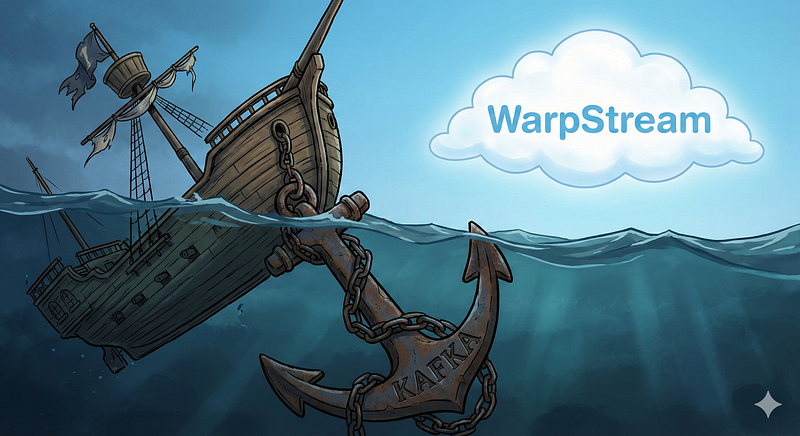
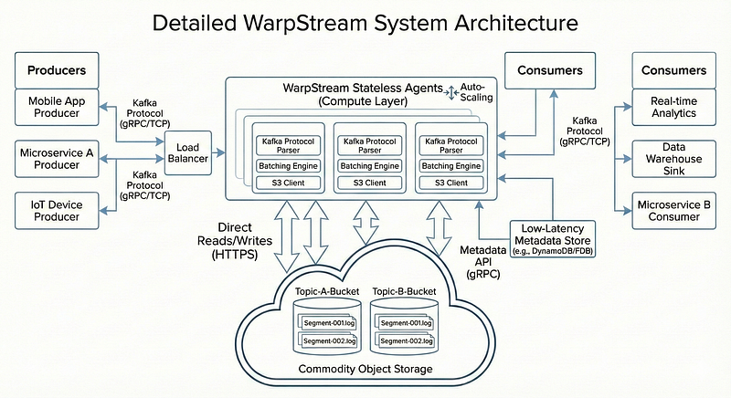
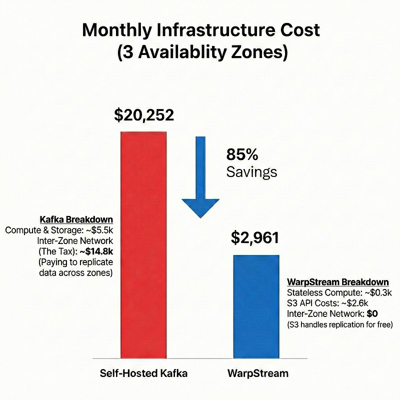

Kafka is the default choice for event streaming. It is the gold standard. But let’s be honest, maintaining a Kafka cluster is a nightmare.
Between managing ZooKeeper (or KRaft), handling partition rebalancing, and dealing with disk failures, the infrastructure often owns the developer, not the other way around. And then there is the bill. The hidden costs of inter-zone networking fees can silently bleed a budget dry.
Is it possible to have the power of Kafka without the operational headache of managing stateful brokers?
Well yes! The answer is WarpStream.
The Problem
Kafka was designed in a different era. It assumes that storage and compute must live together on the same machine. This architecture forces a series of painful trade-offs:
- Local disks: One must manage physical disks. If a disk fills up, the broker stops.
- Rebalancing: Adding a new node requires shuffling terabytes of data across the network.
- Cost: To ensure durability, data is replicated across availability zones (AZs). Cloud providers charge a premium for this cross-AZ traffic.
I wanted a solution that felt serverless, something that separates compute from storage.
The Solution
WarpStream is a drop-in replacement for Apache Kafka. It speaks the Kafka protocol, but it does not store data on local disks. Instead, it writes directly to commodity object storage like Amazon S3.
This changes everything because the data lives in S3, the ‘brokers’ (called Agents in WarpStream) are completely stateless. They are just simple Go binaries that can auto-scale based on CPU load. If an agent dies, it doesn’t matter. There is no data to recover from that specific node because it was never there in the first place.
How Warpstream works

The architecture is radically simple.
Producers send data to WarpStream Agents using the standard Kafka protocol.
Agents batch these records and write them directly to S3 (or GCS/Azure Blob).
Consumers read data via the agents, which fetch it from S3.
This means durability is outsourced to S3, which is designed for 99.999999999% durability. There is no need to configure replication factors or worry about leader elections.
The "Hidden" Cost Killer
The most impressive part of this architecture is the cost impact. In a traditional Kafka setup on AWS, a massive chunk of the bill comes from Inter-Zone Data Transfer. Every time a message is replicated from a broker in Zone A to a broker in Zone B, it costs money.
With WarpStream, agents write directly to S3. S3 handles the availability across zones without charging the user for that cross-zone replication traffic. This single architectural decision can cut streaming costs by 80%.
Since WarpStream is wire-compatible with Kafka, there is no need to rewrite application code. Existing libraries work out of the box.
I set up a simple Node.js producer using kafkajs to test the connection.
const { Kafka } = require('kafkajs')
const kafka = new Kafka({
clientId: 'my-app',
brokers: ['b-1.warpstream.svc:9092'], // WarpStream Agent Endpoint
ssl: true,
sasl: {
mechanism: 'plain',
username: 'warpstream_username',
password: 'warpstream_password'
}
})
const producer = kafka.producer()
const run = async () => {
await producer.connect()
await producer.send({
topic: 'test-topic',
messages: [
{ value: 'Hello WarpStream!' },
],
})
await producer.disconnect()
}
run().catch(console.error)
The code is identical to what one would write for a standard Kafka cluster. The application does not know the difference.
The Showdown
Here is a quick breakdown of why the switch makes sense
Storage
- Kafka: Expensive local SSDs.
- WarpStream: Cheap S3 Object Storage.
Scaling
- Kafka: Hours/Days (Rebalancing data)
- WarpStream: Seconds (Stateless agents)
Operations
- Kafka: requires a dedicated team
- WarpStream: set and forget
Latency
- Kafka: Sub-millisecond (memory/disk)
- WarpStream: ~200ms (S3 write latency)

Conclusion
WarpStream provides the reliability of S3 with the interface of Kafka. It eliminates the operational burden and drastically reduces costs. It is time to stop overpaying for complexity.
Honestly, the latency trade-off is real with WarpStream. If the use case requires sub-millisecond latency (e.g., high-frequency trading), Kafka is still the winner. For everything else, such as logs, analytics, and change data capture, WarpStream is great.